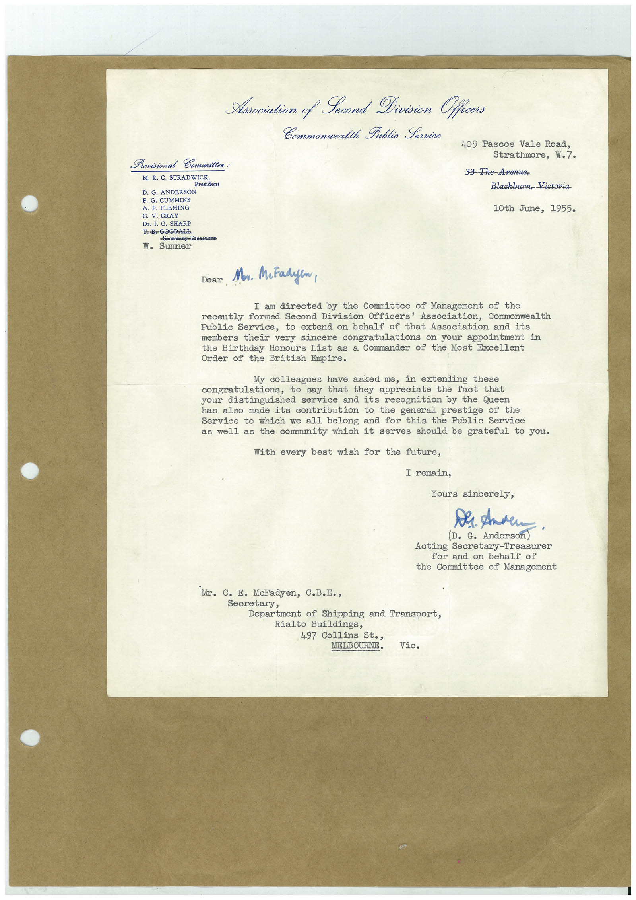

Book 1 · scan 100


Description
Transcription
Context
Review notes
Compare the machine draft with the scan. Handwriting and names need human review.
Artifacts
Edit the artifacts field in this note’s frontmatter to change these records. This summary is generated.
B01-S100-A01 — Letter — Book 1, scan 100
Types: Typed document, Letter
Scope: Whole scanned page; individual items can be split out during review.
Caption: Not mapped yet.
Caption source: Not recorded yet.
Caption status: unmapped
Machine transcription
Provisional Committee: M. R. C. STRADWICK resident D. G. ANDERSON F. G. CUMMINS A. P. FLEMING C. V. CRAY Dr. I. G. SHARP T-B-GOODALE, -Seorotesy Treasures W. Sumner Asociation of Second Division Officers Commonwealth Public Service 409 Pascoe Vale Road, Strathmore, W.7. 33 The-Avenue, Blackburn, Victoria 10th June, 1955. Dear Mor. McFadyen, I am directed by the Committee of Management of the recently formed Second Division Officers' Association, Commonwealth Public Service, to extend on behalf of that Association and its members their very sincere congratulations on your appointment in the Birthday Honours List as a Commander of the Most Excellent Order of the British Empire. My colleagues have asked me, in extending these congratulations, to say that they appreciate the fact that your distinguished service and its recognition by the Queen has also made its contribution to the general prestige of the Service to which we all belong and for this the Public Service as well as the community which it serves should be grateful to you. With every best wish for the future, I remain, Yours sincerely, Der. Anden (D. G. Anderson) ' Acting Secretary-Treasurer for and on behalf of the Committee of Management Mr. C. E. McFadyen, C.B.B., Secretpartment of Shipping and Transport, Rialto Buildings, 497 Collins St., MELBOURNE. Vic.